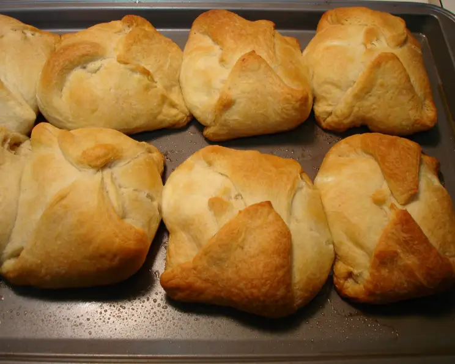

Chicken Crescents
Home

Description
A very fun, hands on dish to make. Inspired by chicken salad, this chicken filling goes inside
crescent dough and gets wrapped up. A bit difficult to get down at first, but well worth the wait.
Ingredients
- 3 ounces cream cheese
- 3 tablespoons butter
- 2 cups cooked chicken, cut into small cubes
- 2 tablespoons diced celery
- 2 tablespoons onion
- 1 can crescent dough
- Salt to taste
- Pepper to taste
Instructions
For chicken mixture:
- Mix cream cheese and butter until smooth
- Add cubed chicken, celery, onion, salt and pepper
To make the crescents:
- Separate dough into four rectangular sections (not triangular)
- Spoon ½ cup chicken mix into each roll
- Pull edges up and seal tightly
- Bake 20 min at 350 degreees F (or until golden brown)
- Serve immediately
- Serves 4